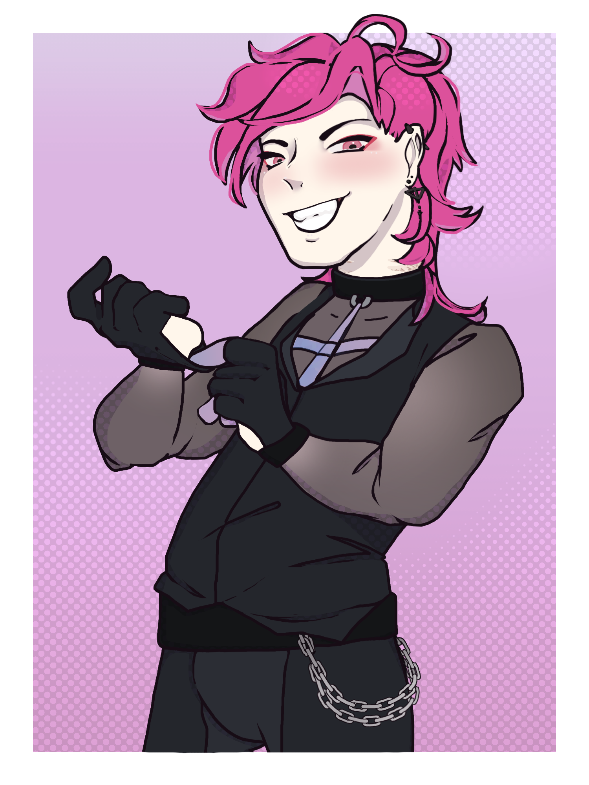

Io
Congratulations!~ You’re most like the popular idol, Io!~ Everyone must love you, as your charms are irresistible!~ Your close friends are like family to you, and you’d do anything to protect them~ As the secret Siren of the Triad, you are the least suspicious person in the room~ If anyone were to test the waters, they’d find themselves shivering at the touch~ Your smile can brighten a room, and melt someone’s heart~ How cute~ That mask must be really suffocating~ You can only sing your troubles away for so long~ What would you do if your muse were to be taken away?~